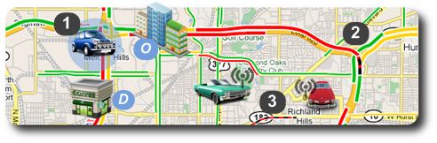

In the last years many agents-based platforms have been proposed to deal with urban mobility by tackling problems related to demand management. However, most of these platforms have some drawbacks:
- since information processing is centralized, in fact, they are not agents-based tools
- as they assume simplified hypothesis, they are unappropriated for traffic engineering in real scenarios
- they do not consider more than one actor inserted in the traffic system
In the MOBIL project we deal with an integrated platform which:
- is indeed based in autonomous agents and multiagent systems
- is actually able to cope with a fine level of abstraction, which in traffic control and in simulation of human drivers is a major factor for ensuring the applicability and effectiveness of the method
- considers the effects caused by several actors trying to adapt to perceived changes (typically, changes in the state of the environment in which these actors interact)
This project aims at proposing a platform that addresses the above problems. The platform has a strategic objective to provide a tool that is integrated, effective and efficient. Besides integrating different methods for demand and control, the project also has the purpose to improve the routing algorithms. The dynamic update of shortest path graphs is a fundamental question in vehicle routing given that so far weights in shortest path algorithms are usually assumed to be fixed which is a very strong assumption in this type of scenario.